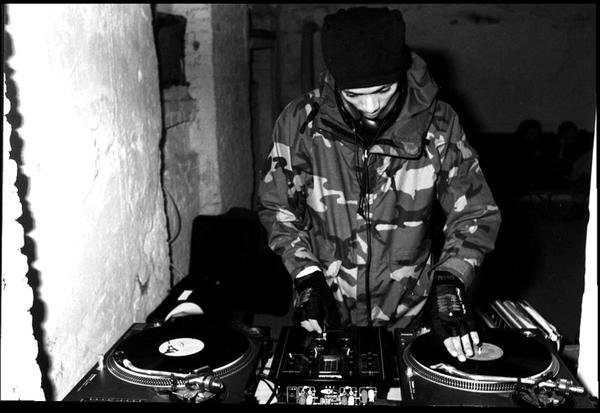

Carl Crack Archive
Carl Crack Archive
Look Thru
Streaming
Discogs
Reviews & Press
Digital Hardcore Recordings
Carl Crack (born Karl Bohm, 5 May 1971 to 6 September 2001) was a Swazi-born German techno artist best known for his membership in the digital hardcore band Atari Teenage Riot from 1992 to 2000.
